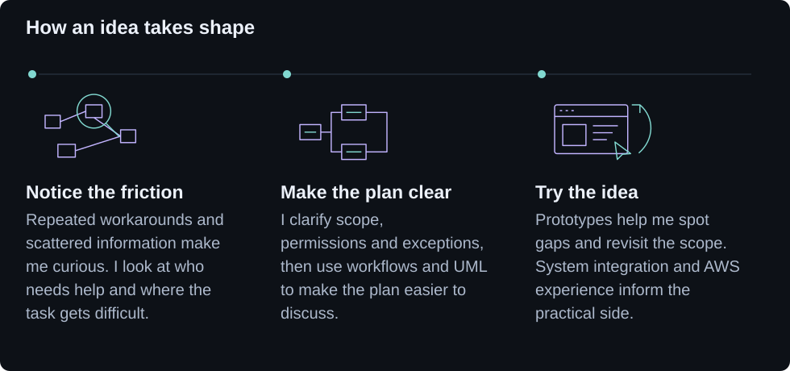

Ever find yourself switching between tools just to finish one task? Or trying to follow a process that nobody has quite written down? Those are the kinds of things that get me curious.

Where do you start when something feels harder than it should?
With the situation people are already in. Who is involved? What are they trying to do? Where do they get stuck? I work through those questions to clarify the need and decide which part is worth tackling first.
How does a vague idea become a workable plan?
By mapping the steps and making the rules explicit: what belongs in scope, who can do what, and how information moves. User flows, UML and architecture diagrams give everyone something specific to discuss, including what should happen when a step fails or gets interrupted.
What happens once the plan is on paper?
I use prototypes to explore how the experience would work and revisit the plan when practical constraints emerge. Hands-on experience with interfaces, system integration and AWS architecture and deployment helps me connect the proposed solution to what it would take to run it.

|

|